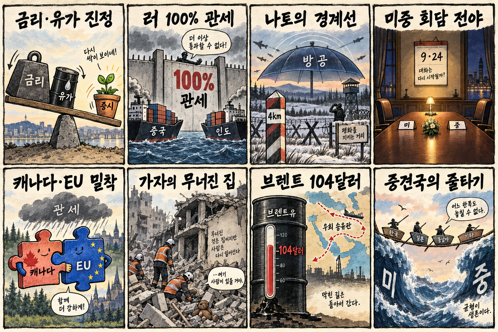
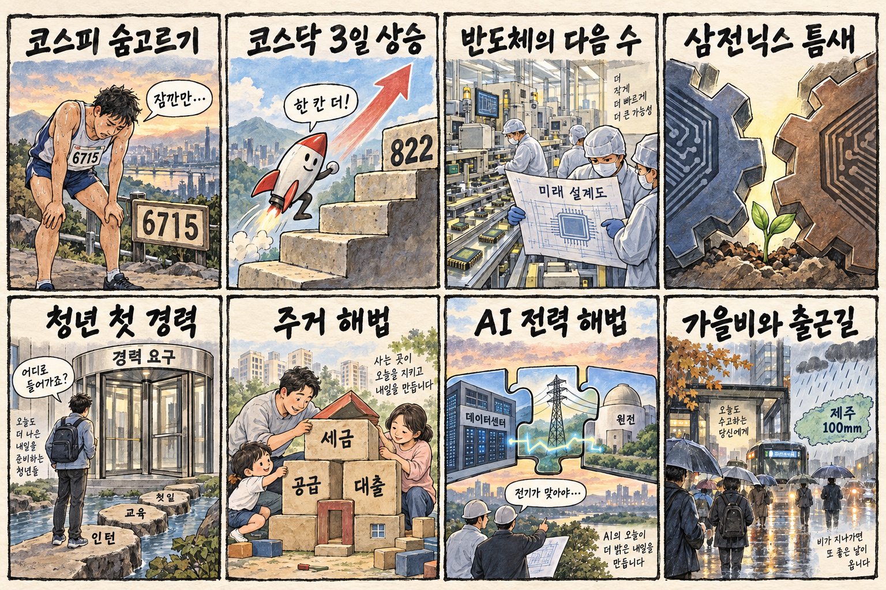

01
슈퍼마이크로컴퓨터 · 38.09→40.35달러 · +5.93%
내용요약 시가 대비 5.93% 상승하며 조사 종목 가운데 가장 강한 흐름을 보였습니다.
예상여파 AI 서버 수요 기대가 회복됐지만 단일 거래일 급등 뒤 추격 위험은 남습니다.
MORNING_BRIEFING_20260918
작성 시각: 2026-09-18 06:38 KST · 직전 미국 정규장과 2026-09-18 KST 당일 공개 기사 기준
직전 미국 정규장인 9월 17일 뉴욕증시는 금리와 유가의 동반 진정으로 다우 +0.61%, S&P 500 +1.14%, 나스닥 +1.69%를 기록했습니다. 반도체·AI 서버·사이버보안의 상대강도가 살아났지만 원·달러 환율 상승은 한국 시장의 외국인 수급에 부담입니다. 오늘은 미국 기술주 훈풍과 환율 경계가 맞서는 장세를 예상하며, 개장 직후 추격보다 수급 확인을 우선합니다.
| 지수 | 종가 | 등락률 | 한국 증시 시사점 |
|---|---|---|---|
| 다우존스 | 51,778.04 | +0.61% | 금리·유가 진정 속 기술주 위험선호 회복 |
| S&P 500 | 7,637.76 | +1.14% | 금리·유가 진정 속 기술주 위험선호 회복 |
| 나스닥 종합 | 26,418.30 | +1.69% | 금리·유가 진정 속 기술주 위험선호 회복 |
금리·유가 진정에 기술주 위험선호가 빠르게 회복했습니다.
전일 6,715.41로 보합권 마감했지만 시가 대비로는 0.94% 밀렸습니다.
3거래일 연속 상승하며 대형주보다 상대적으로 견조했습니다.
환율·수급·보정 표본 문턱을 모두 통과한 후보가 없습니다.
9월 17일 보고서는 필수 수급·컨센서스·30건 이상 보정 표본 부족으로 공식 추천을 내지 않았습니다. 게시 당시 판단을 유지하며 사후 종목을 추가하지 않습니다.
| 시장 | 종가 | 등락률 | 기준 |
|---|---|---|---|
| KOSPI | 6,715.41 | -0.04% | 9월 17일 · 시가 대비 -0.94% |
| KOSDAQ | 822.18 | +0.76% | 9월 17일 · 시가 대비 +0.25% |
| 다우존스 | 51,778.04 | +0.61% | 미국 9월 17일 정규장 |
| S&P 500 | 7,637.76 | +1.14% | 미국 9월 17일 정규장 |
| 나스닥 종합 | 26,418.30 | +1.69% | 미국 9월 17일 정규장 |
슈퍼마이크로컴퓨터가 시가 대비 5.93% 상승했습니다.
크라우드스트라이크와 인텔이 각각 4% 안팎 올랐습니다.
어플라이드 머티어리얼즈가 시가 대비 2.38% 내렸습니다.
보잉과 넷플릭스가 각각 2%대 하락했습니다.
내용요약 시가 대비 5.93% 상승하며 조사 종목 가운데 가장 강한 흐름을 보였습니다.
예상여파 AI 서버 수요 기대가 회복됐지만 단일 거래일 급등 뒤 추격 위험은 남습니다.
내용요약 시가 대비 4.10% 올라 사이버보안주의 상대강도가 돋보였습니다.
예상여파 AI 도입 확대와 보안 지출의 연계 기대가 이어질 수 있으나 변동성은 큽니다.
내용요약 시가 대비 3.84% 상승해 반도체 업종의 위험선호 회복에 동참했습니다.
예상여파 미국 내 생산과 AI 공급망 기대가 지지할 수 있지만 실적 개선의 지속성 확인이 필요합니다.
내용요약 시가 대비 2.60% 하락하며 상승장에서도 산업재 약세가 나타났습니다.
예상여파 수주·생산 정상화와 비용 부담에 대한 시장의 민감도가 이어질 수 있습니다.
내용요약 시가 대비 2.38% 내리며 반도체 장비주는 기술주 반등에서 소외됐습니다.
예상여파 메모리 강세와 별개로 장비 발주 주기와 밸류에이션 부담을 구분해 볼 필요가 있습니다.
KOSPI는 전일 6,715.41로 전일 종가 대비 -0.04%, 시가 대비 -0.94%를 기록했습니다. 미국 나스닥 급반등은 국내 반도체·AI 인프라에 긍정적이지만 원·달러 환율 1,380원대 전망과 높은 유가는 외국인 수급 및 제조원가에 부담입니다. KOSDAQ의 상대강도가 이어지는지, 삼성전자·SK하이닉스가 전일 고점을 회복하는지 확인하기 전에는 장전 갭 상승을 추격하지 않는 편이 합리적입니다.
오늘은 추천 없음 — 현금 관망
06:30 KST 기준 당일 시가가 형성되지 않았고, 전일까지의 외국인·기관 수급, 최신 컨센서스 변화, 30건 이상 유사 조건 보정 확률, 예상 손익비 1.5를 동시에 검증한 후보가 없습니다. 유가·금리·환율 동반 부담 국면에서 종합점수와 상승확률을 임의로 만들지 않습니다.
관심 연결종목 에너지·사이버보안·전력 인프라·고용량 메모리는 관찰 대상일 뿐 매수 추천이 아닙니다. 장전 예상 갭이 크면 추격하지 않습니다.
전일 장중 밀림 뒤 지지력과 외국인 현물·선물 수급을 봅니다.
환율 상승이 미국 기술주 훈풍을 상쇄하는지 확인합니다.
고유가의 운송·화학·소비 업종 원가 부담을 점검합니다.
미국 AI 서버·메모리 강세가 국내 대형주로 이어지는지 봅니다.
핵심 요약: AI 경쟁이 초대형 시스템, zHBM, AI 팩토리, 데이터센터 전력 조달로 확장되고 있습니다. 자금과 성능 발표만 보기보다 실제 고객 확보, 양산 수율, 전력 인프라의 실행력을 구분해야 합니다.
내용요약 화웨이가 엔비디아에 맞서는 100만 프로세서 규모의 초대형 AI 시스템 청사진을 공개했다는 당일 보도입니다.
예상여파 AI 인프라 경쟁이 개별 칩에서 시스템 연결과 공급망 역량으로 넓어지며 미·중 기술 생태계의 분리가 심화할 수 있습니다.
내용요약 실리콘밸리 스타트업이 기술력만큼 시장의 관심을 얻기 위한 경쟁에 나섰다는 당일 보도입니다.
예상여파 AI 투자 열기 속에서도 고객 확보와 배포 능력이 자금조달 및 생존을 가르는 요인이 될 수 있습니다.
내용요약 AI 인프라 기업 크루소가 39억달러 시리즈 F 투자와 309억달러 기업가치를 확보했다는 당일 보도입니다.
예상여파 대규모 자금이 AI 팩토리와 데이터센터 증설로 이어지면 서버·냉각·전력 수요가 동반 확대될 수 있습니다.
내용요약 삼성전자가 zHBM을 통해 AI 가속기 속도를 10배로 높이겠다는 구상을 제시했다는 당일 보도입니다.
예상여파 고대역폭 메모리의 성능 경쟁이 패키징과 시스템 설계까지 확대되며 검증 일정과 양산 수율이 핵심이 될 전망입니다.
내용요약 AI 데이터센터 전력 수요에 대응하려면 한국식 원전 건설과 금융구조 개선이 필요하다는 당일 인터뷰 보도입니다.
예상여파 전력 조달이 AI 설비투자의 병목으로 부상해 원전·송전망·프로젝트 금융의 결합이 중요해질 수 있습니다.
핵심 요약: 러시아 에너지 거래국 관세와 미중 관세 협상이 세계 교역의 불확실성을 키우고 있습니다. 폴란드 국경 긴장과 가자 붕괴 참사, 브렌트유 104달러대는 안보와 물가 위험이 여전히 높음을 보여줍니다.
내용요약 미 하원이 러시아산 에너지 거래국에 100% 관세를 부과하는 법안을 가결해 중국과 인도에 충격이 우려된다는 당일 보도입니다.
예상여파 제재가 현실화하면 원유 교역 경로와 아시아 물가, 미·중 통상 갈등이 동시에 흔들릴 수 있습니다.
내용요약 러시아의 공습이 폴란드 국경 4km 인근까지 접근해 나토의 경계가 높아졌다는 당일 보도입니다.
예상여파 우발적 영공 침범이나 군사적 오판 위험이 커져 유럽 방공·안보 비용이 확대될 수 있습니다.
내용요약 미국이 중국에 대한 7.5% 추가 관세 결정을 9월 24일 미중 회담 뒤로 미뤘다는 당일 보도입니다.
예상여파 회담 결과에 따라 공급망과 수입물가 전망이 크게 달라질 수 있어 기업의 선제 재고 조정이 이어질 수 있습니다.
내용요약 가자지구에서 폭격으로 손상된 아파트가 무너져 21명이 숨졌고 추가 붕괴 위험 주택이 많다는 당일 보도입니다.
예상여파 인도주의 위기가 심화하며 휴전과 구호 접근을 요구하는 국제사회의 압력이 커질 수 있습니다.
내용요약 사우디 공급 우려 완화로 국제유가가 하락했지만 브렌트유는 배럴당 104달러대에 머물렀다는 당일 보도입니다.
예상여파 유가의 절대 수준이 높아 운송·제조 원가와 소비자물가 부담은 계속될 수 있습니다.

핵심 요약: 미국 기술주 강세와 환율 상승이 맞서는 가운데 국내 시장은 KOSPI 보합과 KOSDAQ 상대강도를 보였습니다. 반도체의 다음 성장동력, 청년 첫 경력, 주거 안정, 제주 폭우가 오늘의 산업·생활 의제입니다.
내용요약 미국 증시 강세와 원·달러 환율 1,380원대 급등이 겹쳐 한국 증시가 혼조 출발할 수 있다는 당일 장전 전망입니다.
예상여파 기술주 훈풍은 긍정적이지만 환율 상승이 외국인 수급을 제약할 수 있어 개장 뒤 방향 확인이 필요합니다.
내용요약 반도체 호황기일수록 다음 성장동력과 기술 격차를 준비해야 한다는 당일 분석입니다.
예상여파 메모리 호황이 이어져도 연구개발·패키징·장비 생태계 투자가 늦어지면 다음 주기 경쟁력이 약해질 수 있습니다.
내용요약 보건·복지 일자리가 18만명 늘었지만 청년 고용의 구조적 문은 더 좁아졌다는 당일 보도입니다.
예상여파 첫 경력 기회와 지속 가능한 민간 일자리의 부족이 소비와 주거 독립을 제약할 수 있습니다.
내용요약 서민 주거 안정을 위해 세제·공급 규제의 근본적 개편이 필요하다는 당일 칼럼입니다.
예상여파 공급 확대와 금융 안정의 균형이 정책 신뢰와 주택시장 기대를 좌우할 수 있습니다.
내용요약 전국이 흐리고 제주에는 100mm가 넘는 강한 비가 예상된다는 당일 기상 보도입니다.
예상여파 제주·남해안 이동과 시설물 관리에 주의가 필요하고 출근길 교통 지연 가능성도 있습니다.
